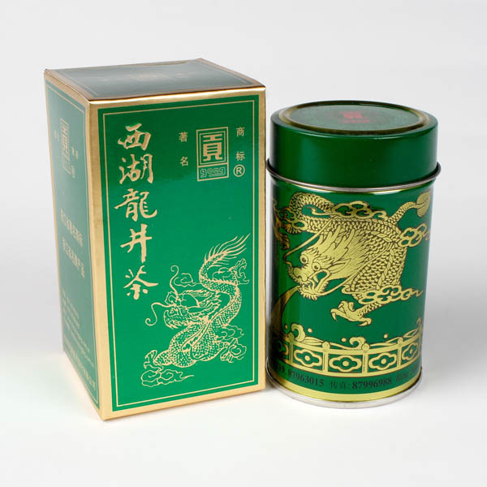

购买: 599元
西湖龙井
西湖龙井茶，因产于中国杭州西湖的龙井茶区而得名。中国十大名茶之一。欲把西湖比西子，从来佳茗似佳人。龙井既是地名，又是泉名和茶名。茶有“四绝”：色绿、香郁、味甘、形美。特级西湖龙井茶扁平光滑挺直，色泽嫩绿光润，香气鲜嫩清高，滋味鲜爽甘醇，叶底细嫩呈朵。清明节前采制的龙井茶简称明前龙井，美称女儿红，“院外风荷西子笑，明前龙井女儿红。”这优美的句子如诗如画，堪称西湖龙井茶的绝妙写真。集名山、名寺、名湖、名泉和名茶于一体，泡一杯龙井茶，喝出的却是世所罕见的独特而骄人的龙井茶文化。